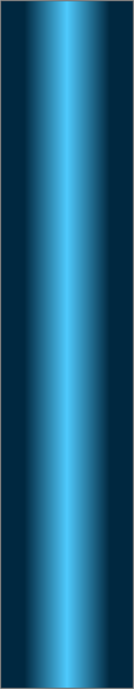
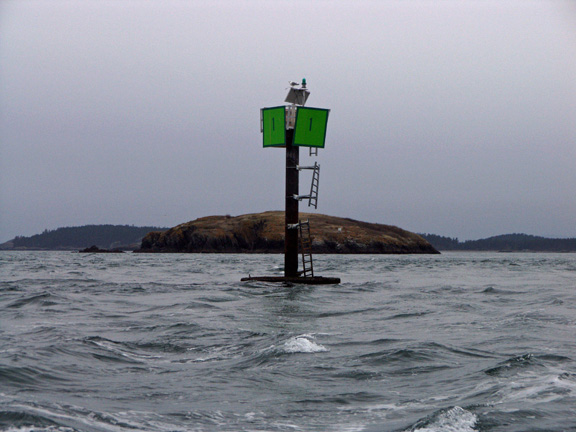
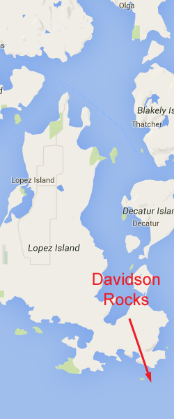
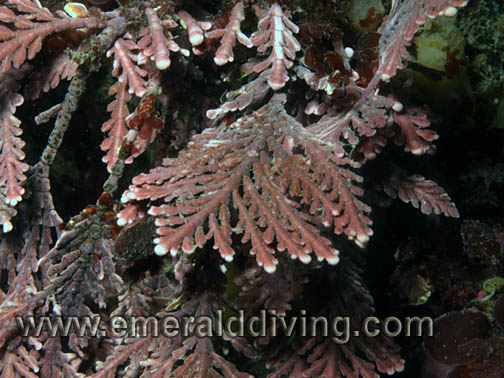
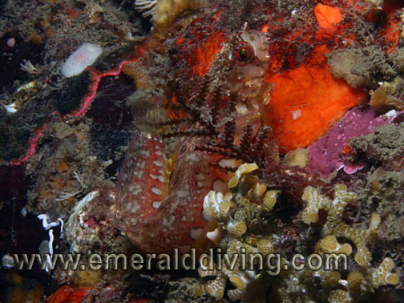
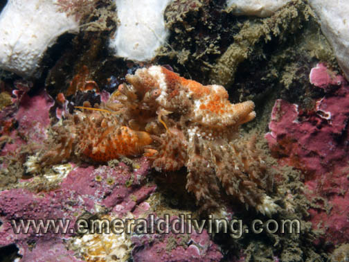
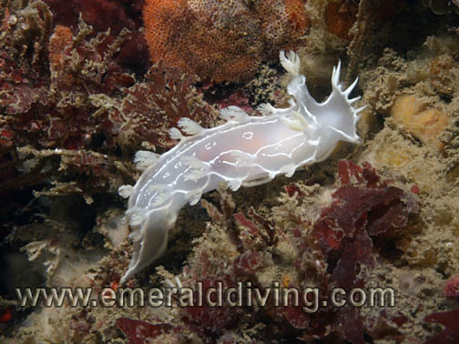
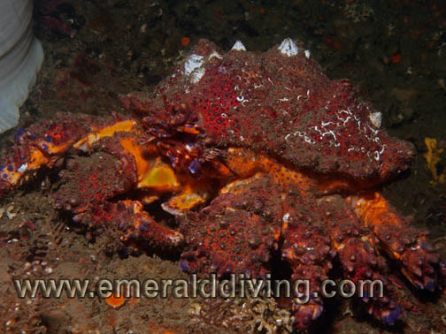
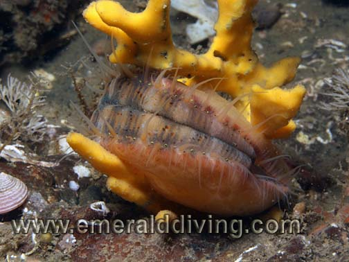
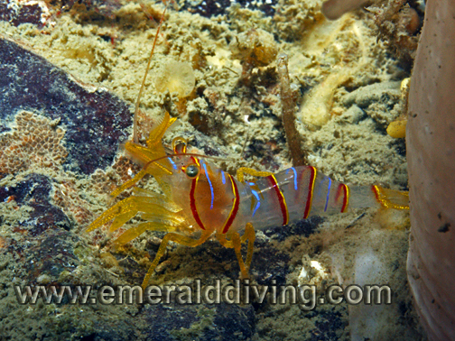

<!doctype html>
<html>
<head>
<meta charset="utf-8">
<title>Davidson Rocks</title>
<meta name="generator" content="WYSIWYG Web Builder - http://www.wysiwygwebbuilder.com">
<link href="Emerald_Diving.css" rel="stylesheet">
<link href="davidson.css" rel="stylesheet">
<script>
function onChangeGoMenu1(){var a=document.getElementById('GoMenu1-select'),b=a.options[a.selectedIndex].value,c=a.options[a.selectedIndex].className;a.selectedIndex=0;a.blur();b&&(NewWin=window.open(b,c),window.NewWin.focus())};
</script>
</head>
<body>
<script>
var gaJsHost = (("https:" == document.location.protocol) ? "https://ssl." : "http://www.");
document.write(unescape("%3Cscript src='" + gaJsHost + "google-analytics.com/ga.js' type='text/javascript'%3E%3C/script%3E"));
</script>
<script>
try {
var pageTracker = _gat._getTracker("UA-15987748-1");
pageTracker._trackPageview();
} catch(err) {}</script>

<div id="container">
<div id="wb_Shape132" style="position:absolute;left:673px;top:655px;width:377px;height:1930px;z-index:3;">
</div>
<div id="wb_MasterPage1" style="position:absolute;left:0px;top:2px;width:1048px;height:57px;z-index:4;">
<div id="wb_Shape1" style="position:absolute;left:0px;top:0px;width:1048px;height:57px;z-index:0;">
</div>
<div id="wb_Text1" style="position:absolute;left:20px;top:5px;width:169px;height:16px;z-index:1;">
<span style="color:#00FF00;font-family:Arial;font-size:13px;"><em><a href="./local_sites_sj.html" class="Green">Return to San Juan Map</a></em></span></div>
<div id="wb_GoMenu1" style="position:absolute;left:800px;top:5px;width:225px;height:25px;z-index:2;">
<form id="GoMenu1" role="menu">
<select id="GoMenu1-select" name="GoMenu1" onchange="onChangeGoMenu1()">
<option class="_self" value="#" selected>Select a Dive Site</option>
<option class="_self" value="./davidson.html" role="menuitem">Davidson Rocks</option>
<option class="_self" value="./deadman_wall.html" role="menuitem">Deadman Island Wall</option>
<option class="_self" value="./kellett_wall.html" role="menuitem">Kellett Wall</option>
<option class="_self" value="./lawrence_point.html" role="menuitem">Lawrence Point</option>
<option class="_self" value="./lawson_bluff.html" role="menuitem">Lawson Bluff</option>
<option class="_self" value="./long_island.html" role="menuitem">Long Island West Wall</option>
<option class="_self" value="./peavine_pass.html" role="menuitem">Peavine Pass</option>
<option class="_self" value="./pile_point.html" role="menuitem">Pile Point</option>
<option class="_self" value="./point_doughty.html" role="menuitem">Point Doughty</option>
<option class="_self" value="./sares_head.html" role="menuitem">Sares head</option>
<option class="_self" value="./strawberry_island.html" role="menuitem">Strawberry Island</option>
<option class="_self" value="./turn_point.html" role="menuitem">Turn Point</option>
<option class="_self" value="./whale_rocks.html" role="menuitem">Whale Rocks</option>
</select>
</form>
</div>
</div>
<div id="wb_Text2" style="position:absolute;left:160px;top:568px;width:324px;height:12px;z-index:5;">
<span style="color:#000000;font-family:Arial;font-size:11px;">Double click to edit</span></div>
<div id="wb_Text1654" style="position:absolute;left:7px;top:1227px;width:477px;height:1px;z-index:6;">
&nbsp;</div>
<div id="wb_Image2" style="position:absolute;left:0px;top:58px;width:794px;height:594px;z-index:7;">
</div>
<div id="wb_Text3" style="position:absolute;left:22px;top:66px;width:527px;height:54px;z-index:8;">
<span style="color:#009300;font-family:Arial;font-size:48px;">Davidson Rocks</span></div>
<div id="wb_Text4" style="position:absolute;left:0px;top:671px;width:555px;height:1px;z-index:9;">
&nbsp;</div>
<div id="wb_Text5" style="position:absolute;left:0px;top:655px;width:661px;height:1914px;z-index:10;">
<span style="color:#FFFFFF;font-family:Arial;font-size:15px;"><strong>Topography: </strong>Extensive offshore rock wall that drops to over 200 feet.<br><br><strong>San Juan Islands marine life rating: </strong>3<strong><br></strong><br><strong>San Juan Islands structure rating: </strong>4<br><br><strong>Diving Depth: </strong>70-110 feet.<br><br><strong>Highlight: </strong>Massive wall covered with fields of giant plumose anemones.<br><br><strong>Skill level: </strong>Advanced<br><br><strong>GPS coordinates: </strong>N48° 24.785&nbsp; W122° 48.671<br><br><strong>Access by boat: </strong>Davidson Rocks are located in the Strait of Juan de Fuca near the southeast reach of Lopez Island. This large reef does not break the surface but is marked with a piling and navigational marker. Colville Island is immediately west. The west side of the reef boasts a sheer wall that is easily located with a depth sounder as the substrate drops from 20 feet to 200 feet.<br><br><strong>Shore access: </strong>None.<br><br><strong>Dive profile: </strong>A live dive boat is mandatory whenever I dive the offshore and current swept wall.<br><br>The reef above the wall lies within 20 feet of the surface near the piling. I enter the water due west of the piling in close proximity to the wall and head west. The reef quickly increases in depth before giving way to the wall in 50-60 feet of water. The wall is very steep or vertical in most places and marred with some vertical ruts cut into the face of the wall that collect rocks and boulders. <br><br>I swim against the current for the first part of the dive, then use the current to drift back to my starting point. I plan to end the dive close to the navigational marker as the depth around the marker is better suited for an easy safety stop. If I can’t get to safety stop depth on the reef, I look for a thick strand of bull kelp to use as an ascent line to safety stops depths. I have done many safety stops fluttering in heavy current at the end of a strand of bull kelp above this reef. I am also prepared to shoot a signal marker buoy with my finger spool should I end up performing my safety stop adrift in the current. <br>&nbsp; <br><strong>My preferred gas mix: </strong>EAN 32<br><strong><br>Current observations: </strong><br><br><em>Current Station: </em>Colville Island, 0.1 SSE or Rosario Strait<br><em>Noted Slack Corrections</em>: None <br><br>This is a very current intensive site. The current sweeps over the wall from the east on the ebb and directly into the wall from the west on the flood.&nbsp; Once the current starts flooding, water pushing in from the Strait of Juan de Fuca intensely upwells over this reef.&nbsp; On an ebb, the current waterfalls over the wall, although there can also be upwellings in some areas due to vertical back-eddies.&nbsp; I have&nbsp; been in situations on this wall where I am in a waterfall, then move 10 yards and am in an upwelling - not my idea of a comfortable dive.&nbsp; The bottom line is I only dive this site at slack.<br><br>I prefer to dive this site&nbsp; at the end of a minor ebb of 1.5 knots or less.&nbsp; I typically get to this site at least 30 minutes before that time and watch the &quot;V&quot; shaped wake created by the current at the navigational marker (wind permitting) and watch for the wake to subside, which is typically about 50 minutes before slack before flood.&nbsp; I can then do an hour dive and explore this wall at will, and end my dive right at slack to explore the top of the reef in slack water.&nbsp; The top of this reef is covered in kelp and does come up to within about&nbsp; 15-20&nbsp; feet of the surface in places.&nbsp; If you end your dive off-slack, the current on top of the reef can be very intense in which case I often have to hold on to bull kelp to prevent being swept away.&nbsp; <br><br><strong>Boat Launch: <br><br></strong>Cornet Bay State Park (Whidbey Island). Approximately 8 miles east from the dive site. Excellent facility with bathrooms, docks, camping and general store.<br><br><strong>Facilities: </strong>None<strong><br><br>Hazards: <br></strong><br>Current: Likely heavy current on the reef. Potential upwelling or waterfalling current on the wall. <br><br>Depth: Davidson Rocks is a sheer wall that drops well beyond safe recreational diving depths.&nbsp; Good buoyancy and depth management skills are essential. <br><br>Swell: This exposed area is potentially susceptible to swell, however swell is usually minimal or non-existent during good weather.<br><br>Free ascent: A free ascent in heavy current may be required is the reef or kelp cannot be followed to safety stop depth.<br><br>Offshore location: There is no adjacent shoreline to swim to in case of emergency. <br><br>Exposure: This area is exposed to weather and wind from all directions. Surface conditions can deteriorate quickly.<br><br><strong>Marine life: </strong>Invertebrates in this area lack the dusty coating of silt that chokes many of the dive sites closer to Deception Pass and elsewhere in the San Juan Islands. Immense congregations of spectacular giant plumose anemones are able to thrive in these silt free waters. Huge sections of the wall are enveloped with these white giants, giving the wall the effect of being covered in a thick snow. Scattered about the white stalks are bright pink crimson anemones, ostrich-plume, sea fir, and other hydroids, yellow encrusting sponges, and so much more! Look for colorful candy stripe shrimp on the bases of crimson anemones.<br><br>This is a great place to hunt nudibranchs.&nbsp; Many nudibranchs appear to be seasonal, but I do find three lined, dotos, golden dironas, dall's, albus, orange spotted, white lined dironas, nanaimo, Hudson's, San Diego and others here with regularity.&nbsp; Many of these nudibranchs patrol the hydroid fields that dot this reef.&nbsp; This is a great macro dive!<br><br>The top of the reef is dominated by kelp, but there are channels within the reef with extensive colonies of proliferation anemones - include some that are shaded blue which is not overly common.&nbsp; The top of the reef also boasts incredible structures of coralline algae.<br><br>This site can be a mixed bag for fish, but as of 2018 there is a rare resident adult yelloweye rockfish living at this site (and has been here for at least 10 years).&nbsp; Yellowtail, Puget Sound, copper, and quillback rockfish are always present here.&nbsp; On several occasions I have found tiger rockfish, sub-adult and juvenile yelloweye, wolf eel, and some monster lingcod.&nbsp; Painted and kelp greenling are ever-present, as are scalyhead and longfin sculpins and longfin gunnels.&nbsp; This is just an awesome PNW dive site when conditions are right.<br><br><br><br><br><br><br><br><br></span></div>
<div id="wb_Image1" style="position:absolute;left:796px;top:58px;width:244px;height:594px;z-index:11;">
</div>
<div id="wb_Image3" style="position:absolute;left:683px;top:682px;width:352px;height:262px;z-index:12;">
</div>
<div id="wb_Image4" style="position:absolute;left:683px;top:947px;width:352px;height:262px;z-index:13;">
</div>
<div id="wb_Image5" style="position:absolute;left:683px;top:1212px;width:352px;height:262px;z-index:14;">
</div>
<div id="wb_Image6" style="position:absolute;left:684px;top:1477px;width:352px;height:262px;z-index:15;">
</div>
<div id="wb_Image7" style="position:absolute;left:683px;top:1743px;width:352px;height:262px;z-index:16;">
</div>
<div id="wb_Text6" style="position:absolute;left:811px;top:923px;width:220px;height:16px;text-align:right;z-index:17;">
<span style="color:#FFFFFF;font-family:Arial;font-size:13px;"><em>Pink Feather Coralline Algae</em></span></div>
<div id="wb_Text7" style="position:absolute;left:879px;top:956px;width:153px;height:16px;text-align:right;z-index:18;">
<span style="color:#FFFFFF;font-family:Arial;font-size:13px;"><em>Mosshead Warbonnet</em></span></div>
<div id="wb_Text8" style="position:absolute;left:931px;top:1456px;width:103px;height:16px;text-align:right;z-index:19;">
<span style="color:#FFFFFF;font-family:Arial;font-size:13px;"><em>Heart Crab</em></span></div>
<div id="wb_Text9" style="position:absolute;left:693px;top:1435px;width:139px;height:16px;z-index:20;">
<span style="color:#FFFFFF;font-family:Arial;font-size:13px;"><em>Copper Rockfish</em></span></div>
<div id="wb_Text10" style="position:absolute;left:892px;top:1752px;width:139px;height:16px;z-index:21;">
<span style="color:#FFFFFF;font-family:Arial;font-size:13px;"><em>Puget Sound King Crab</em></span></div>
<div id="wb_Text12" style="position:absolute;left:691px;top:662px;width:357px;height:15px;text-align:center;z-index:22;">
<span style="color:#FFFFFF;font-family:Arial;font-size:12px;"><em>Underwater imagery from this site</em></span></div>
<div id="wb_Image9" style="position:absolute;left:682px;top:2273px;width:352px;height:262px;z-index:23;">
</div>
<div id="wb_Text132" style="position:absolute;left:693px;top:1491px;width:189px;height:16px;z-index:24;">
<span style="color:#FFFFFF;font-family:Arial;font-size:13px;"><em>Diamondback Nudibranch</em></span></div>
<div id="wb_Text13" style="position:absolute;left:893px;top:2513px;width:139px;height:16px;text-align:right;z-index:25;">
<span style="color:#FFFFFF;font-family:Arial;font-size:13px;"><em>Swimming Scallop</em></span></div>
<div id="wb_Image8" style="position:absolute;left:683px;top:2008px;width:352px;height:262px;z-index:26;">
</div>
<div id="wb_Text11" style="position:absolute;left:892px;top:2257px;width:139px;height:16px;text-align:right;z-index:27;">
<span style="color:#FFFFFF;font-family:Arial;font-size:13px;"><em>Candy Stripe Shrimp</em></span></div>
</div>
</body>
</html>